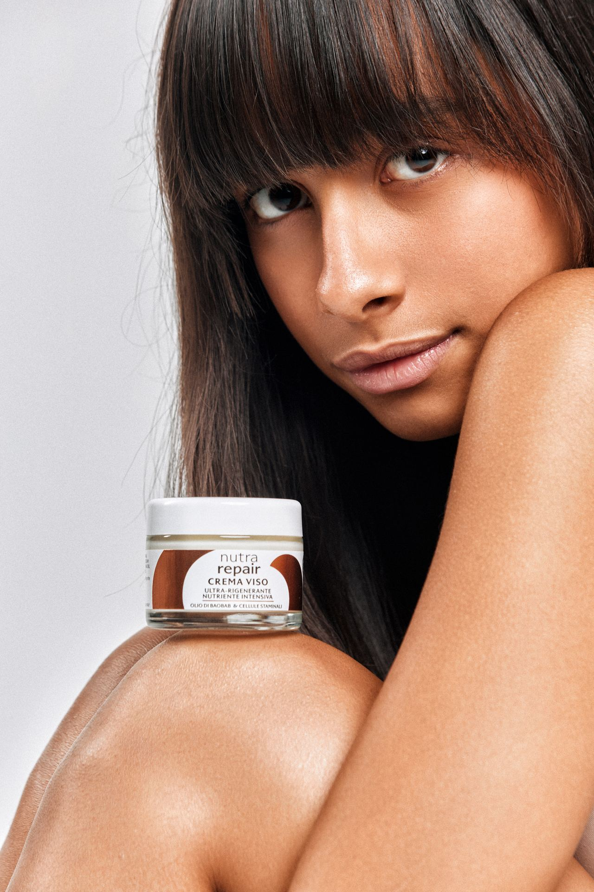
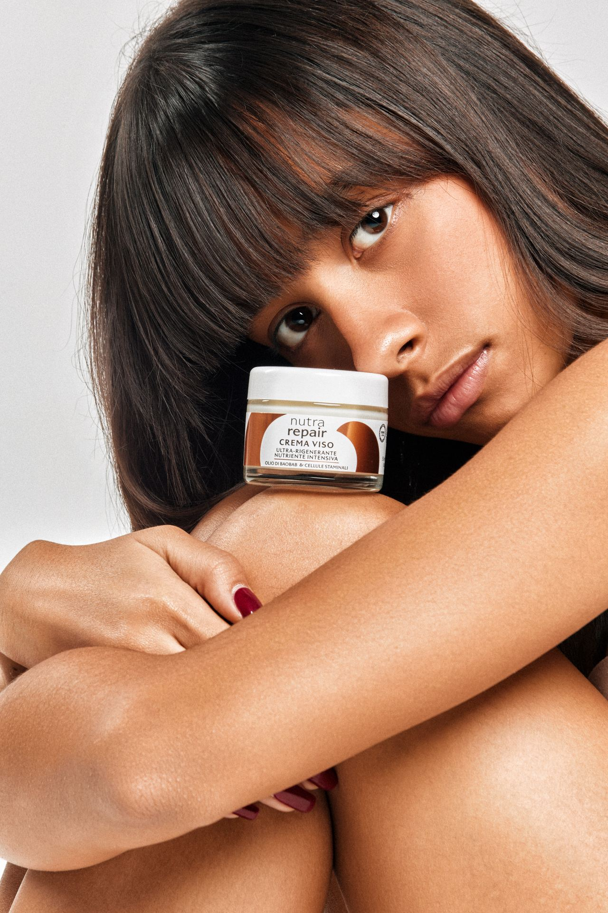
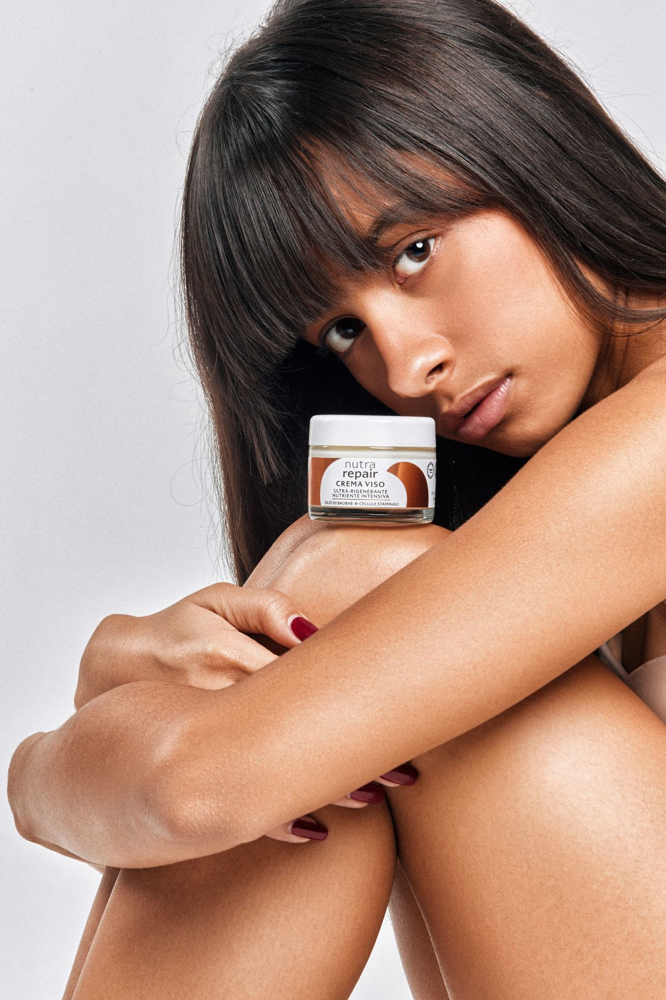

Oltre cinquantacinque anni di passione per la cosmetica naturale. Tre generazioni, una sola fabbrica, tra Bologna e l'Appennino.

Foto · Ingredienti naturaliLa naturalità non è il claim finale. È il punto di partenza da cui ogni formula viene scritta — e il filtro con cui ogni materia prima viene rifiutata. Plant Based certificato Bioagricert.

Foto · Laboratorio R&SIl nostro laboratorio R&S lavora ogni giorno per estrarre, stabilizzare, concentrare ciò che la natura produce. Peptidi biomimetici, biofermentazione, estratti brevettati: tecnologie al servizio degli ingredienti, non il contrario.

Foto · Fabbrica, Pianoro 1969Produciamo a Pianoro, nella stessa fabbrica in cui tutto è cominciato. Abbiamo scelto di non delocalizzare mai: il controllo sul ciclo, la conoscenza del gesto, il legame col territorio non si compra.
Pianoro è un comune di pedemontana, a quaranta minuti da Bologna, dove l'Appennino diventa pianura. Antonio Venturino scelse questo posto perché era vicino alle materie prime, lontano dai distretti, esattamente dove la cosmetica naturale non si faceva ancora.
Lo stabilimento di Via del Lavoro 32 è lo stesso di sempre. Non abbiamo costruito un nuovo capannone per sembrare più grandi — abbiamo ristrutturato quello che c'era, installato il fotovoltaico sul tetto, e continuato a fare le cose nello stesso modo.
Ottanta persone che lavorano ogni giorno nello stesso laboratorio dove Venturino mescolava le prime formule. I macchinari sono cambiati; il principio — capire cosa metti sulla pelle — è rimasto identico nel tempo.
Produciamo cosmetica naturale certificata per brand, farmacie ed erboristerie che vogliono una linea propria. Formula, produzione, packaging e dossier regolatorio: tutto sotto un unico tetto a Pianoro, dal 1969.
Scopri il servizio conto terzi